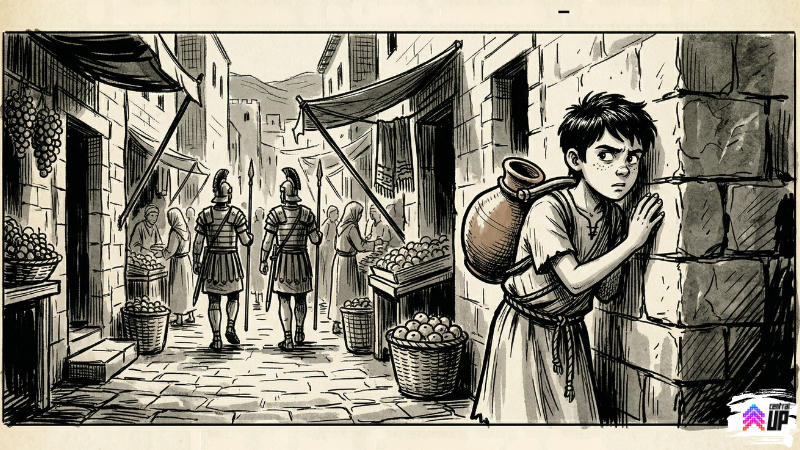
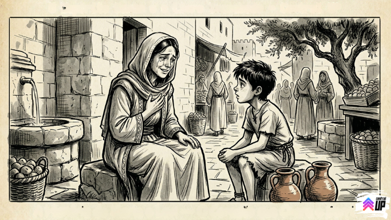

Este devocional abre na quarta-feira, 08/04!
Este devocional abre na quarta-feira, 08/04!
Levi foi procurar respostas. Encontrou algo que não estava procurando.
Levi acordou com uma decisão.
Ia encontrar aquela mulher.
Não sabia o nome dela. Não sabia onde morava. Sabia só que ela tinha estado no portão leste de manhã cedo, com o rosto todo molhado de um choro que não fazia sentido, e que aquela imagem tinha passado a noite inteira na frente dos seus olhos toda vez que ele tentava dormir.
Ele tinha visto gente chorando antes. Muita gente. Jerusalém na época da Páscoa era cheia de emoção. Mas aquilo era diferente. Aquilo era outra coisa.
Foi pro portão leste antes mesmo do sol subir direito. Ela não estava lá.
Levi ficou do lado de fora por uns vinte minutos, fingindo verificar o peso da jarra, fingindo amarrar a sandália, fingindo ser invisível como bom carregador de água sabe ser. Não havia rastro dela.
Começou a perguntar. Discretamente. "Viu um grupo de mulheres aqui de manhã cedo? Uma delas com rosto vermelho de choro?" O vendedor de figos franziu a testa. A senhora das especiarias virou o rosto. Um velho encostado numa parede apontou com o queixo pra uma viela mais estreita, perto do bairro dos tecelões, sem dizer uma palavra.

Levi entrou na viela.
Estava quase na metade quando ouviu passos atrás dele. Virou rápido. Dois soldados romanos, conversando baixo, caminhando na mesma direção.
Ele encostou na parede, fingiu mexer na alça da jarra, coração acelerado.
Os soldados passaram sem olhar pra ele. Mas Levi ouviu pedaços da conversa:
Eles viraram na esquina e sumiram.
Levi ficou parado na viela por um bom tempo.
Ele sabia qual era a outra versão. Era o boato. Era o que dois homens no mercado tinham sussurrado. Era o que o túmulo vazio não conseguia explicar.
Continuou andando.
No fim da viela havia um pequeno pátio aberto. E lá estavam elas. Quatro mulheres sentadas em pedras baixas, conversando em voz baixa. A do rosto vermelho estava no meio, com olhos ainda brilhando, mas sorrindo enquanto falava.
Levi chegou com a jarra na mão como se fosse a coisa mais natural do mundo.
"Água? Tenho água fresca do poço de Siloé."
Duas delas olharam pra ele com desconfiança. A do rosto vermelho, porém, olhou diferente. Como se reconhecesse alguma coisa nele, mas não soubesse o quê.
"Você estava no portão leste hoje cedo," ela disse. Não era pergunta.
Levi abriu a boca. Fechou. Abriu de novo.
"Estava entregando água."
Ela olhou pra jarra. Pro rosto dele. De volta pra jarra.
"Você não estava entregando água nenhuma. Você estava me olhando."
Silêncio.
"Pode sentar," ela disse, com um meio sorriso. "Água não vai a lugar nenhum."
O nome dela era Maria.
Ela não contou tudo de uma vez. Foi saindo aos poucos, como quem ainda está aprendendo a colocar em palavras uma coisa que as palavras mal comportam.
Ela conhecia Jesus. Tinha sido uma das pessoas que o seguiu. Estava lá quando crucificaram. Tinha visto com os próprios olhos. Tinha passado o sábado inteiro destruída, porque aquilo parecia o fim de tudo.
De manhã cedo, tinha ido ao túmulo com as outras mulheres, levando unguentos pra preparar o corpo.
O túmulo estava aberto. E vazio.
"Achei que tivessem roubado," ela disse. "Fiquei parada ali na entrada chorando, porque não entendia nada. Nem o corpo eu podia cuidar direito."
Levi estava ouvindo com tanta atenção que tinha esquecido completamente de fingir que não estava ouvindo.
"E aí?"
"Aí eu ouvi uma voz atrás de mim. Achei que fosse o jardineiro do lugar. Perguntou por que eu estava chorando. E eu disse que tinham levado o meu Senhor e eu não sabia onde estava. E aí..."
Ela parou.
"E aí o quê?"

Maria olhou pra ele com aquele rosto todo misturado de novo, lágrima e sorriso juntos, aquela expressão impossível que Levi não conseguia decifrar.
"Ele disse meu nome."
Pausa.
"Só isso. Falou: 'Maria.' Do jeito que ele sempre falava. E eu soube na hora que era ele."
Levi ficou quieto por um tempo que não soube medir.
"Mas ele estava morto."
"Eu sei."
"Você viu."
"Eu sei."
"Então como..."
"Eu não sei como," ela disse, simplesmente. "Só sei que quando ele falou meu nome, eu sabia que era ele. E sabia que estava vivo. As duas coisas ao mesmo tempo, sem explicação."
Levi olhou pra pedra no chão. Pro céu. Pra jarra na mão.
Tinha ido ali pra encontrar uma mulher confusa e sair com uma resposta simples.
O choro e o sorriso faziam sentido agora. Faziam sentido da pior forma possível: do jeito que as coisas fazem sentido quando você não consegue provar, mas também não consegue negar.
"Você chora de tristeza quando perde alguém," Levi disse, pensando em voz alta. "E chora de outra coisa quando encontra de volta."
Maria assentiu devagar.
"Tem um nome pra isso?"
Ela sorriu de verdade agora.
"Alegria," ela disse. "Só que desse jeito, maior do que o normal. Do tipo que passou pela dor primeiro."
Levi foi embora sem saber o que fazer com nada daquilo.
Mas antes de sair, Maria mencionou uma coisa quase de passagem, como quem não percebe que está entregando uma informação importante:
"Os outros estão juntos numa casa, do lado do bairro dos curtidores. Esperando."
Isso não é um conto. É uma reconstituição real.
Levi tinha as mesmas quatro pistas. E chegou à mesma conclusão: não tinha resposta fácil. Mas os fatos eram os fatos. A pedra foi removida. O pano foi dobrado. O nome foi chamado.
Alguém que morre com cuidado não rouba o próprio corpo.
Central UP — IEQ Central Londrina
Desenvolvido por Pr. Eduardo